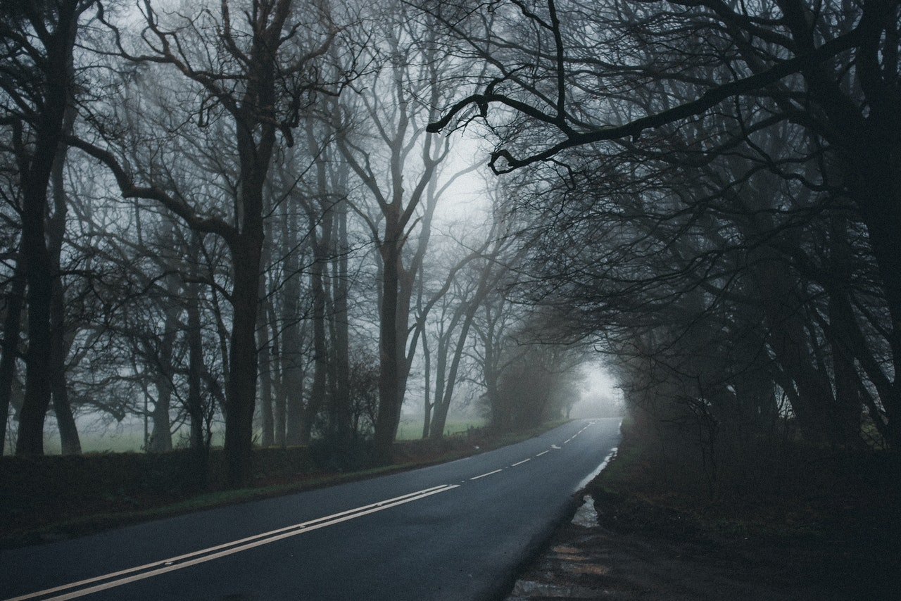

Decides seguir camnando por la carretera. No te causa intriga ni curiosidad ir a ver a lo que sea que esté caminando a tú lado, además, conforme más avanzas, los sonidos se desvanecen nuevamente, tal vez solo era un animal buscando comida... Continuas caminando por un largo, largo... largo rato. La neblina se hace mucho más espesa.Cuando de pronto, logras visualizar una silueta... ¡Parece ser una persona y un auto!, Te acercas cada vez más y más, ya ni siquiera lográs ver bien a tu alrededor, es como si la neblina hubiera cubierto todo y ahora todo se cubría por un color blanco...
Cuando al fin lográs acercarte a la misteriosa silueta, no puedes creerlo... ¡Enserio es una persona, y estaba junto a un auto! De pronto parece como si la neblina cubriera todo a tu alrededor, excepto por el conductor, pues lograbas verlo pefectamente junto a su auto...
¡Al fin llegas! - Te dice el conductor, cómo si te hubiera esperado todo este tiempo.
¿Qué le responderas?